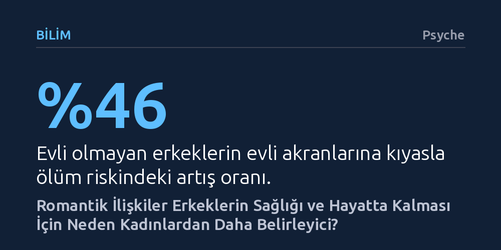

BILIM · Psyche · 2026-10-23
Geniş kapsamlı araştırmalar, yaygın inanışın aksine erkeklerin romantik ilişkilere kadınlardan çok daha fazla ihtiyaç duyduğunu ve ayrılıklarda sağlık ile yaşam süresi açısından çok daha ağır bedeller ödediğini gösteriyor. Erkeklerin duygusal destek altyapısını yalnızca partnerlerine bağımlı kılan geleneksel roller, bu kırılganlığın temel nedenini oluşturuyor.
Erkeklerin duygusal açıdan kendine yeten bağımsız figürler olduğu mitini yıkarak, ilişkilerin bitişinin erkekler için neden kadınlardan çok daha ölümcül ve yıkıcı sonuçlar doğurduğunu açıklıyor.

Popüler kültür yüzyıllardır kendi kendine yeten, duygularını bastıran ve aşka yalnızca isteğe bağlı bir lüks gözüyle bakan erkek figürlerini yüceltir. Sessiz kovboylardan başıboş samuraylara kadar uzanan bu anlatılarda erkeğin hayatında aşk ikincil bir süs olarak resmedilirken; tutkunun, bağlanmanın ve ilişkinin duygusal yükünün kadınlara ait olduğu varsayılır. Oysa romantik ilişkiler psikolojisi alanında yapılan son araştırmalar, bu kadim kabulü bütünüyle yerle bir ediyor.
Gerçek veriler, romantizmin ilk kıvılcımından ayrılık sonrasına kadar erkeklerin partnerlerine kadınlardan çok daha bağımlı olduğunu gösteriyor. Bekâr erkekler yalnızlıklarından kadınlara kıyasla belirgin şekilde daha az memnun ve hayatlarında bir partnerin bulunmasını mutlulukları için çok daha kritik görüyor. Yedi farklı ülkede yürütülen kültürlerarası araştırmalar, heteroseksüel birlikteliklerde duygularını ve sevgisini ilk telaffuz edenin çoğunlukla erkekler olduğunu, erkeklerin aşka daha hızlı kapıldığını ve karşılıksız aşk acısını daha sık yaşadığını kanıtlıyor.
Romantik bir birlikteliğin insan sağlığına ve genel yaşam doyumuna iyi geldiği uzun süredir biliniyor; ancak bu koruyucu kalkanın asıl faydasını erkekler görüyor. Dünya genelinde yaklaşık 8 milyon kişinin verilerini kapsayan geniş çaplı bir meta-analiz, evli olmayan kadınların evlilere göre ölüm riskinin %22 arttığını, buna karşılık evli olmayan erkeklerde bu risk artışının %46'ya fırladığını ortaya koyuyor. Başka bir deyişle, uzun ve sağlıklı bir ömür sürmek söz konusu olduğunda bir ilişki içinde olmak erkekler için kadınlara kıyasla iki kat daha belirleyici bir rol oynuyor.
Ne var ki ilişkiler sona erdiğinde dengeler erkeklerin aleyhine çok daha sert biçimde bozuluyor. Heteroseksüel çiftlerde ayrılık ve boşanma kararlarının yaklaşık üçte ikisi kadınlar tarafından başlatılıyor. Kadınlar ayrılık ertesinde özgürleşme, rahatlama ya da deneyimden ders çıkarma gibi olumlu taraflar bulabilirken, erkekler derin bir boşluğa yuvarlanıyor. Hayat doyumundaki sert düşüş, yoğun yalnızlık hissi ve alkol ile madde bağımlılığı gibi zararlı başa çıkma yöntemleri erkeklerde çok daha yaygın görülüyor.
Bu tablonun en sarsıcı boyutu ise hayatta kalma istatistiklerinde karşımıza çıkıyor. Boşanma sonrasında erkeklerin intihar riski ikiye katlanırken, ayrılığın fiilen yaşandığı kriz döneminde bu oran evli erkeklerin dört katına ulaşıyor. Kadınlarda boşanma sonrası intihar riskinde böylesi dramatik bir sıçrama görülmezken, birçok erkek için bir ilişkinin bitişi doğrudan bir yaşam mücadelesine dönüşüyor.
Sözde güçlü cinsiyetin kalp kırıklığı karşısında neden bu denli savunmasız kaldığını anlamak için madalyonun hem pratik hem de duygusal yüzüne bakmak gerekiyor. Pratik tarafta, ev içi organizasyonun ve bakım emeğinin büyük kısmını üstlenen kadınlar ayrılık sonrasında bu yükten kurtulup kendilerine vakit ayırabilirken; erkekler hem evin lojistik yönetimini hem de kendilerini doktora gitmeye teşvik eden koruyucu partner desteğini bir anda kaybediyor. Üstelik çocuk velayetinin çoğunlukla annede kalması, babaların çocuklarıyla bağını zayıflatarak kayıp hissini katmerliyor.
Fakat en köklü ve belirleyici neden, duygusal yakınlık ihtiyacında yatıyor. İnsan türü doğası gereği anlaşılmaya, derdini dökmeye, şefkat görmeye ve güvende hissetmeye muhtaçtır. Ancak kadınlar bu duygusal desteği ailelerinden ve geniş arkadaş çevrelerinden rahatlıkla temin edebilirken, erkekler tüm bu ihtiyaçlarını karşılayabilecekleri tek sığınak olarak yalnızca romantik partnerlerini görüyor.
Bu yakınlık açığı çocuklukta başlıyor. Erkek çocukları daha on yaş civarındayken akranlarına duygularını açmamayı öğreniyor; ebeveynler dahi kız çocuklarıyla duygular üzerine konuşmaya ve onların üzüntüsünü onaylamaya daha yatkın davranıyor. Yetişkinlikte ise kırılganlık göstermek erkekler arasında bir zayıflık ve geleneksel erkeklik rollerinin ihlali sayılıyor. Kendi cinsiyet rolleri tarafından yalnızlaştırılan erkek, tüm duygusal altyapısını tek bir kadının omzuna yüklüyor; ilişki bittiğinde ise bu altyapı bütünüyle çöküyor.
Toplumsal cinsiyet rolleri kadınlar için son yıllarda genişleyip çeşitlenirken, erkeklik kalıpları katı bir durağanlık içinde sıkışıp kaldı. Kırılganlığı ve duygusallığı yasaklayan maço erkeklik ideali, ironik biçimde erkekleri çok daha kırılgan hale getiren ölümcül bir paradoks üretiyor. Duygusal bağ kurmanın meşru görüldüğü tek yer romantik ilişki olunca, erkekler yalnız kaldıklarında savunmasız kalıyor; bu durum kadınların sırtına da haksız ve ağır bir duygusal bakım yükü bindiriyor.
Çözüm, erkeklerin duygusal açıdan hayatta kalabilmek için mutlaka bir romantik partnere muhtaç olmayacağı yeni bir zemin inşa etmekten geçiyor. Bu dönüşümün ilk adımı, okullarda ve ailelerde erkek çocuklarına savunmasızlığın bir zayıflık değil, insani bir güç ve temel yaşam becerisi olduğunu öğretmektir. Erkeklerin birbirleriyle derin, güvenli ve yargılanmadıkları platonik dostluklar kurması olağanlaştırılmalıdır.
Bunun somut ve umut verici örneklerinden biri, Avustralya'da doğup dünyaya yayılan Erkek Kulübesi hareketidir. Geleneksel terapinin getirdiği damgalamadan kaçınan erkekler, bu atölyelerde ahşap işleri ve tamirat gibi pratik projeler etrafında bir araya geliyor; yüz yüze oturup konuşmak yerine yan yana çalışırken dertleşiyor. Erkeklerin hayatta kalması, aşkın hayatlarındaki tek duygusal liman olmaktan çıkarılmasına bağlı.